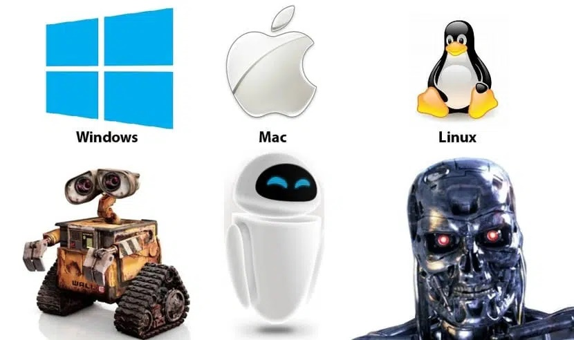

“In real open source, you have the right to control your own destiny.” - Linus Torvalds

Install MobaXterm (Home Edition)
Log in to Taiyi (172.18.6.175), then in your home
directory, type:
We will explain the meaning of this code shortly.
The most widely used way to interact with personal computers is the graphical user interface (GUI). With a GUI, we give instructions by clicking a mouse and using menu-driven interactions. GUI makes it intuitive to learn how to use a computer, however, it’s not efficient in handling a large amount of jobs. This is where we take advantage of the Linux. The Linux shell is both a command-line interface (CLI) and a scripting language, allowing repetitive tasks to be done automatically and fast.
Linux is an operating system (OS) built by Linus Torvalds at the University of Helsinki in 1991. The name “Linux” comes from the Linux kernel.
Linux has survived so long because it’s a powerful tool that allows people to do complex things with just a few keystrokes. More importantly, it helps them combine existing programs in new ways and automate repetitive tasks, so they aren’t typing the same things over and over again. The use of Linux shell is fundamental to using a wide range of other powerful tools and computing resources, including high-performance computing (HPC) supercomputers.
These lessons will start you on a path towards using Linux and Shell on the TaiYi HPC supercomputer.
Consider the command below as a general example of a command, which we will dissect into its component parts:
ls is the command, with an option
-F and an argument /.
We’ve already encountered options (also called switches or flags)
which either start with a single dash (-) or two dashes
(--), and they change the behavior of a command. Arguments
tell the command what to operate on (e.g. files and
directories). Sometimes options and arguments are referred to as
parameters. A command can be called with more than one option
and more than one argument: but a command doesn’t always require an
argument or an option.
Each part is separated by spaces: if you omit the
space between ls and -F the shell will look
for a command called ls-F, which doesn’t exist. Also,
capitalization can be important. For example, ls -s will
display the size of files and directories alongside the names, while
ls -S will sort the files and directories by size.
Putting all that together, our command above gives us a listing of
files and directories in the root directory /. Try
this.
Let’s create a new directory called thesis using the
command mkdir:
As you might guess from its name, mkdir means “make
directory”. Since thesis is a relative path (i.e.,
does not have a leading slash), the new directory is created in the
current working directory.
Note that mkdir is not limited to creating single
directories one at a time. The -p option allows
mkdir to create a directory with any number of nested
subdirectories in a single operation:
Let’s change our working directory to thesis using
cd, then run a text editor called nano to
create a file called draft.txt:
Let’s type in a few lines of text. Once we’re happy with our text, we
can press Ctrl+O (press the Ctrl or
Control key and, while holding it down, press the
O key) to write our data to disk. You’ll be asked what file
we want to save this to: press Return to accept the
suggested default of draft.txt.
Once our file is saved, we can use Ctrl+X
to quit the editor and return to the shell.
On Linux, many programmers use Emacs or Vim (both of which require more time to
learn), or a graphical editor such as Gedit. On Windows, you may
wish to use Notepad++.
Windows also has a built-in editor called notepad that can
be run from the command line in the same way as nano for
the purposes of this section.
Returning to the data_demo directory:
In our thesis directory, we have a file
draft.txt which isn’t a particularly informative name, so
let’s change the file’s name using mv, which is short for
“move”:
The first argument tells mv what we’re “moving”, while
the second is where it’s to go. In this case, we’re moving
thesis/draft.txt to thesis/my_paper.txt, which
has the same effect as renaming the file. Use ls to show
that thesis now contains one file called
my_paper.txt:
Note that mv also works on directories. Let’s move
my_paper.txt into the current working directory.
We use mv once again, but this time we’ll use just the
name of a directory as the second argument to tell mv that
we want to keep the filename, but put the file somewhere new. In this
case, the directory name we use is the special directory name
. that we mentioned earlier.
The effect is to move the file from the directory it was in to the
current working directory. ls now shows us that
thesis is empty:
The cp command works very much like mv,
except it copies a file instead of moving it.
We can also copy a directory and all its contents by using the
recursive option -r, e.g. to back up a
directory:
Now check the result by listing the contents of both the
thesis and thesis_backup directory:
Returning to the data_demo directory, let’s tidy up this
directory by removing the my_paper.txt file we created. The
Linux command we’ll use for this is rm (short for
“remove”):
NOTE: Deleting Is FOREVER
The Linux shell doesn’t have a trash bin that we can recover deleted files from. Instead, when we delete files, they are unlinked from the file system so that their storage space on disk can be recycled. Tools for finding and recovering deleted files do exist, but there’s no guarantee they’ll work in any particular situation, since the computer may recycle the file’s disk space right away.
So think twice (then third time) before you type!!!
rm can remove a directory and all its contents if we use
the recursive option -r, and it will do so
without any confirmation prompts.
* is a wildcard, which matches zero or
more characters. For example, *.txt matches all
files ending in .txt. Let’s consider the
data_demo/molecules directory: *.pdb matches
ethane.pdb, propane.pdb, and every file that
ends with .pdb. On the other hand, p*.pdb only
matches pentane.pdb and propane.pdb, because
the p at the front only matches filenames that begin with
the letter p.
? is also a wildcard, but it matches exactly one
character. For example, ?.txt matches
a.txt but not any.txt. So
?ethane.pdb would match methane.pdb whereas
*ethane.pdb matches both ethane.pdb,
and methane.pdb.
Wildcards can be used in combination with each other e.g.
???ane.pdb matches three characters followed by
ane.pdb, giving cubane.pdb,
ethane.pdb, and octane.pdb.
Now that we know a few basic commands, we can finally look at the
shell’s most powerful feature: the ease with which it lets us combine
existing programs in new ways. We’ll start with the directory called
data_demo/molecules that contains six files describing some
simple organic molecules.
Let’s go into that directory with cd and run the command
wc cubane.pdb:
wc is the ‘word count’ command: it counts the number of
lines, words, and characters in files (from left to right, in that
order).
If we run the command wc *.pdb, the * in
*.pdb matches zero or more characters, so the shell turns
*.pdb into a list of all .pdb files in the
current directory:
Note that wc *.pdb also shows the total number of all
lines in the last line of the output.
If we run wc -l instead of just wc, the
output shows only the number of lines per file:
The vertical bar, |, between the two commands, is called
a pipe. It tells the shell that we want to use the output of
the command on the left as the input to the command on the right.
We can, for example, send the output of wc directly to
sort,:
And now we send the output of this pipe, through another pipe, to
head to show the first 3 lines only, so that
the full pipeline becomes:
The notes are modified from the excellent online tutorial freely available on the Software Carpentry website.
1.1 In your home directory, create a folder TEST, and
three subfolders t1, t2, and t3
inside TEST.
1.2 Change your directory to t1, create a text file
my.dat, write your name and student ID in it, and save the
file.
1.3 Copy my.dat in t1 to TEST,
and rename it to `my_new.dat.
1.4 Delete t1, t2, and t3.
1.5 In TEST, type cat my_new.dat. What do
you see? Use man cat to learn more about cat,
and quit the help document by typing q.
1.6 Delete TEST.
Change your directory to data_demo/molecules, type the
following lines:
ls *t*ane.pdb
ls *t?ne.*
ls *t??ne.pdb
ls ethane.*
What do you get? Can you explain why?
Change your directory to data_demo/molecules, type the
following line:
What do you get? Can you explain why? Use man tail to
learn more about tail.
The data_demo/north-pacific-gyre/2012-07-03 folder
stores some observations from a cruise campaign. Each txt
file should contain 300 lines of data points. But there is
one file that contains fewer lines than the rest of the files. Can you
figure out which one?
{kind=link}